Projet identitaire bassa du Cameroun
Fondements historiques et philosophiques, répertoire symbolique et système visuel contemporain — faire du pagne un support de représentation, de connaissance et de transmission.
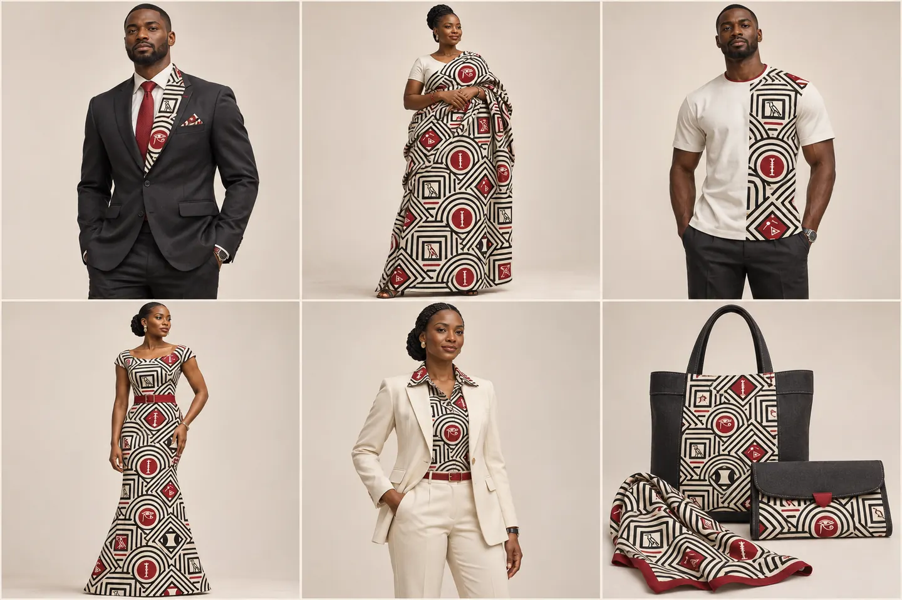
Simulations de collection générées avec l’assistance de l’intelligence artificielle à partir du motif du projet : personnes et produits sont illustratifs. Source : [P3].
Un motif que l’on ne sait pas lire reste un ornement. Accompagné de son nom, de son sens et de sa source, il devient une transmission.
- COMMUNAUTÉ
- Le peuple bassa du Cameroun
- SUPPORT CENTRAL
- Le pagne, décliné dans le vêtement, l’édition, le numérique et l’espace
- CORPUS
- Cinq bassagrammes issus de la recherche initiale publiée en 2022
- PALETTE
- Noir, blanc et rouge, traduits en six nuances
- NATURE
- Projet de recherche et de création porté par son auteur
Le projet propose de faire du pagne un support de représentation, de connaissance et de création pour le peuple bassa du Cameroun. Il articule un corpus de cinq bassagrammes, une palette organisée autour du noir, du blanc et du rouge et une grammaire géométrique que l’on peut décliner sur une tenue, un livre, un lieu culturel ou un outil pédagogique.
L’ambition est de rendre les signes visibles et compréhensibles dans la vie contemporaine. Le tissu devient un point de rencontre entre la mémoire familiale, la transmission des savoirs et les pratiques de création. Le résultat attendu est un ensemble cohérent : répertoire des signes, charte graphique, fichiers maîtres, prototypes et ressources de médiation.
Fondements historiques et philosophiques
Une mémoire située dans des territoires et des lignages
L’histoire mobilisée est celle des Bassa du Cameroun, abordée à travers les traditions d’origine, les formes d’organisation sociale et les transformations des modes de vie. Le projet s’en sert pour construire une représentation culturelle située, sans réduire la diversité des expériences à un récit unique.
- Ngok Lituba, repère de mémoire. Dans un article de 1950, Louis-Marie Pouka — qui se présente lui-même comme bassa — rapporte le rôle de la « pierre percée » dans les récits d’origine et de dispersion des familles. Ce récit est traité comme un patrimoine oral, distinct d’une démonstration archéologique. [S1]
- Le territoire comme espace de relations. L’étude de Jacques Champaud sur le terroir de Mom décrit les liens entre habitat, lignages, terres cultivées et circulation. Ce cas local éclaire l’articulation entre organisation sociale et paysage, sans autoriser à prêter un fonctionnement identique à toutes les communautés bassa. [S2]
- Matières et transformations. Pouka décrit aussi des vêtements d’écorce assouplie et l’usage de peaux. La permanence d’une appartenance culturelle ne se confond donc pas avec l’immuabilité de ses supports : le pagne contemporain prend place dans une longue histoire d’adaptations. [S1]
Le module répété du motif rassemble des signes distincts dans une composition commune : il traduit une continuité entre unité et pluralité. Ce rapprochement entre récit collectif et organisation du motif est une interprétation artistique assumée, et non la reconstitution d’un textile ancien.
La relation comme principe de création
Les signes ne sont pas disposés comme une collection d’ornements indépendants : une structure les relie et leur donne une présence commune. Cette intention trouve un point d’appui dans les lectures philosophiques du Mbog. Robert Ndebi Biya, dans Être, pouvoir et génération (1987), présente le Mbok comme une articulation des éléments de la culture et une pensée de l’être et de la génération, où la langue et les relations de sens occupent une place centrale. [S3] Le recueil bilingue de 323 proverbes publié par le CUVIPREN rappelle, de son côté, le rôle des formes brèves dans la transmission des savoirs. [S4]
La conséquence pour le langage visuel est double : la répétition ne doit pas effacer la singularité du signe, et la variation ne doit pas détruire sa lisibilité. Chaque bassagramme doit pouvoir être reconnu et expliqué. La démarche ne prétend pas résumer la philosophie bassa en cinq figures ; elle ouvre une porte d’entrée visuelle, liée à un corpus précis, qui laisse place à d’autres voix.
Donner une forme commune à une culture vivante
Le besoin auquel répond le projet est celui d’un langage graphique partageable, documenté et adaptable. Il part de la richesse des expressions culturelles existantes — et non de l’idée que le peuple bassa serait dépourvu de signes ou d’arts. Le pagne offre un support visible ; le répertoire permet d’en comprendre le contenu. Les deux ensemble évitent de réduire le projet à une reconnaissance décorative.
Le contexte camerounais récent rappelle l’actualité des liens entre travail historique et création mémorielle : les volets recherche et artistique de la commission franco-camerounaise consacrée à la période 1945-1971 ont été remis en janvier 2025. [S10] Cette référence situe un enjeu culturel général ; elle ne vaut ni affiliation du projet à la commission, ni attribution au peuple bassa d’une position politique unique. Le LCIR explore une articulation voisine, à l’échelle d’un territoire, dans l’idée de projet du Mémorial Ruben Um Nyobè à Eséka et de son village culturel Bassa.
Démarche de recherche
La dimension scientifique du projet tient à la méthode : documentation, distinction des sources, traçabilité des interprétations et possibilité de discussion. La dimension artistique tient aux décisions de forme, d’échelle, de rythme et de couleur. Pour ne jamais confondre les deux, le dossier distingue trois niveaux de discours.
CONTEXTE DOCUMENTÉ
Éléments issus de publications historiques, philosophiques ou linguistiques, référencés entre crochets.
CORPUS DU PROJET
Les bassagrammes, leur graphie et leurs sens tels que présentés dans la planche d’origine, avec ses crédits.
PROPOSITION ARTISTIQUE
Nuances, composition, proportions et applications : une intention de design, jamais une prescription ancienne.
| Étape | Éléments disponibles | Suite proposée |
|---|---|---|
| Constituer le corpus | Planche de cinq bassagrammes et sens associés [P1] | Rassembler les dossiers de recherche détenus par l’auteur |
| Contextualiser | Références historiques et philosophiques identifiées | Approfondir les ouvrages et consigner les variantes |
| Choisir les couleurs | Noir, blanc et rouge documentés ; nuances définies | Confronter les choix aux usages locaux |
| Composer | Motif d’origine puis étude chromatique | Produire les tracés maîtres et le raccord exact |
| Expérimenter | Simulations multisupports | Fabriquer et évaluer les prototypes |
Chaque affirmation appelle la preuve qui lui correspond : une publication historique étaye un contexte, une planche d’auteur documente un choix de corpus, un échantillon d’impression renseigne un rendu matériel. Une simulation visuelle ne prouve ni ancienneté, ni conformité technique, ni adoption communautaire.
Les graphies Bassa, Basaa, Basa, Mbog et Mbok varient selon les auteurs. Les titres des sources sont conservés ; le texte emploie principalement Bassa et Mbog.
Le corpus des bassagrammes
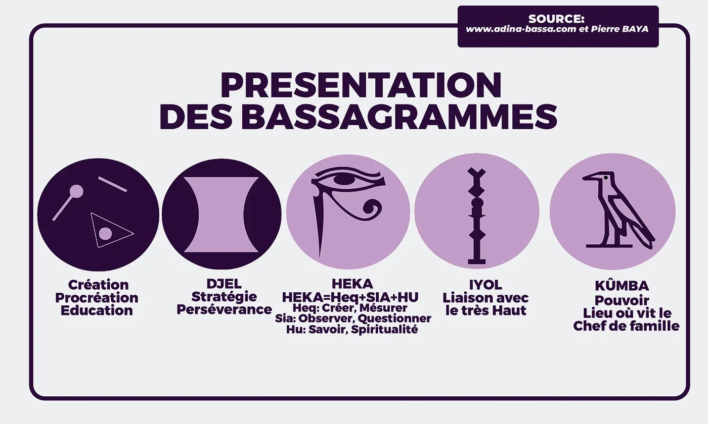
Cette planche constitue la référence visuelle et sémantique du projet. Les bassagrammes et leurs significations proviennent de la recherche initiale personnellement supervisée par Man Mbaï Likol, dont la publication sur Behance constitue la trace publique. Les cinq entrées sont reprises selon leurs intitulés d’origine ; la première est désignée par sa fonction, sans lui ajouter un nom absent de la planche.
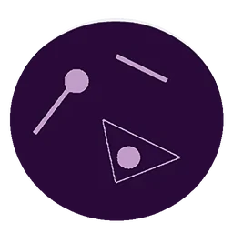
Création, procréation, éducation
Le projet retient cette entrée pour articuler production de la vie et transmission. Ses éléments géométriques restent solidaires dans la composition et ne sont pas isolés en motifs dont le sens changerait. Son commentaire peut accompagner des supports destinés aux familles, aux ateliers et à l’apprentissage.
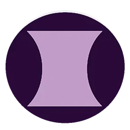
DJEL
Un vocabulaire de continuité dans l’effort et d’organisation de l’action. Le rythme des répétitions en offre une traduction graphique possible — un choix de composition, qui n’attribue à la forme aucune fonction historique supplémentaire.
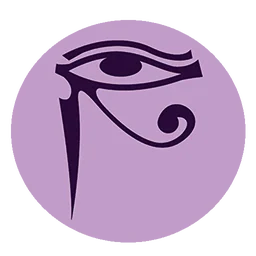
HEKA
Le projet y lit un principe pour sa propre démarche : observer, documenter, composer et transmettre. Cette correspondance est explicitement artistique ; la formulation de la planche est conservée sans être transformée en démonstration étymologique.
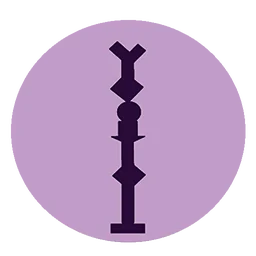
IYOL
Le signe ouvre la dimension spirituelle du corpus. Sa présence doit toujours être accompagnée d’une explication et rester attentive au contexte d’usage, notamment lorsqu’un support le déplace hors de son cadre de présentation.
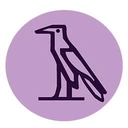
KÛMBA
Le projet en propose une lecture de responsabilité et d’organisation du cadre familial, en maintenant le sens donné par la source. Les usages graphiques ne confèrent au projet ni fonction d’autorité traditionnelle, ni statut d’emblème officiel.
Le noir, le blanc et le rouge
Le choix chromatique s’appuie sur deux pistes distinctes. Leur rapprochement oriente la création ; il ne permet pas d’affirmer l’existence d’une palette officielle commune à tous les Bassa.
- Une indication linguistique. Ervais Fotso Noumsi relève que le blanc, le noir et le rouge font partie des couleurs couramment nommées en bassa du Cameroun. Le projet s’en sert comme repère, sans en déduire une incapacité à désigner d’autres nuances, ni un ancien code textile. [S6]
- Une symbolique dépendante du contexte. Koulsy Lamko reprend un témoignage recueilli par Marie-José Hourantier auprès d’un sage bassa : le noir et le blanc y changent de sens selon la lecture, exotérique ou ésotérique ; le rouge, associé au sang humain, assure une relation entre les mondes — il « relie le ciel à la terre ». Ce témoignage situé, transmis par une source intermédiaire, est conservé dans sa complexité plutôt que réduit à des équivalences fixes. [S7]
Six teintes, trois associations
Le blanc cassé, le charbon et le rouge profond sont les traductions contemporaines retenues ; l’ivoire, le rouge terre et le grenat ouvrent des variantes. Valeurs et proportions relèvent de la direction artistique : elles ne sont tirées d’aucun nuancier ancien.
#F3EFE5#20201E#A52A32#E5D6BA#A44935#812C38Construction graphique
Du signe à une composition partagée
La composition associe les cinq bassagrammes à trois familles d’encadrements : arcs concentriques, portails carrés et losanges. Chaque niveau a une fonction, qui doit rester lisible à toutes les échelles.
SIGNE
Il porte le sens attribué dans le corpus.
ENCADREMENT
Il organise l’espace autour du signe.
RÉPÉTITION
Elle installe le rythme du tissu.
Le motif conserve une trame commune tout en alternant les figures. Le rouge intervient sur une sélection de médaillons répartis dans le champ, sans être affecté à un bassagramme en particulier : cela introduirait une signification chromatique absente du corpus. Le dessin doit rester reconnaissable lorsque le tissu est plié, porté ou découpé ; le raccord final sera construit et testé à partir d’une même tuile, avec contrôle des bords.
Du motif de 2022 à l’étude chromatique de 2026
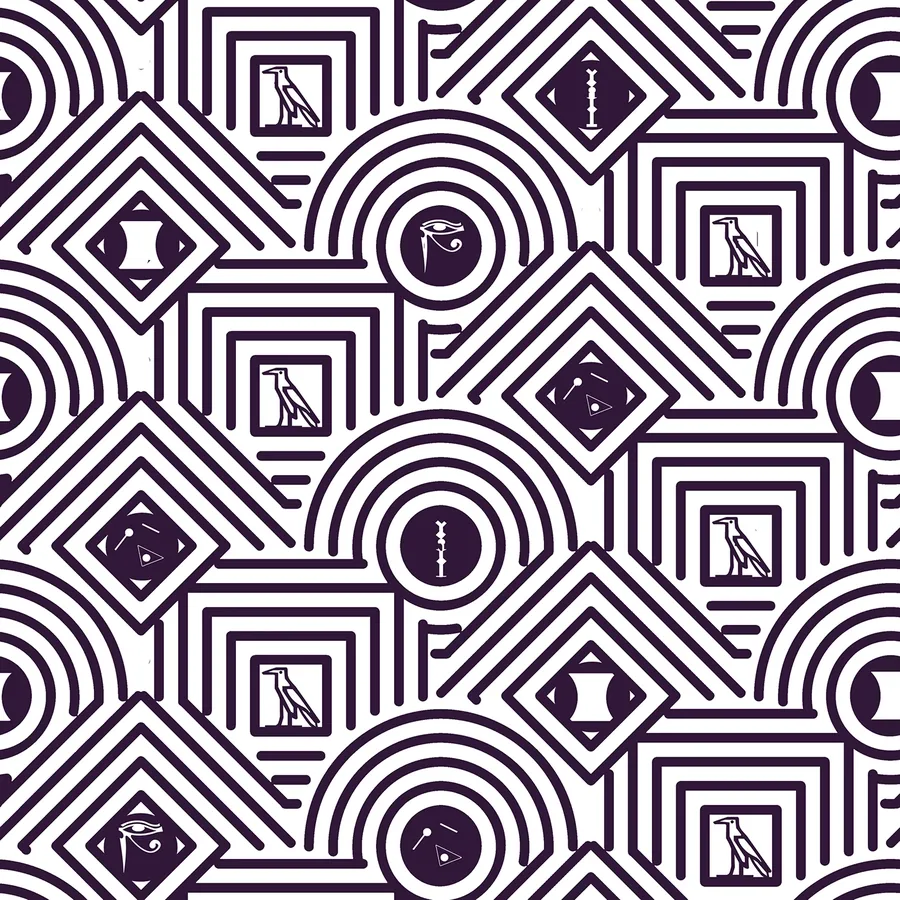
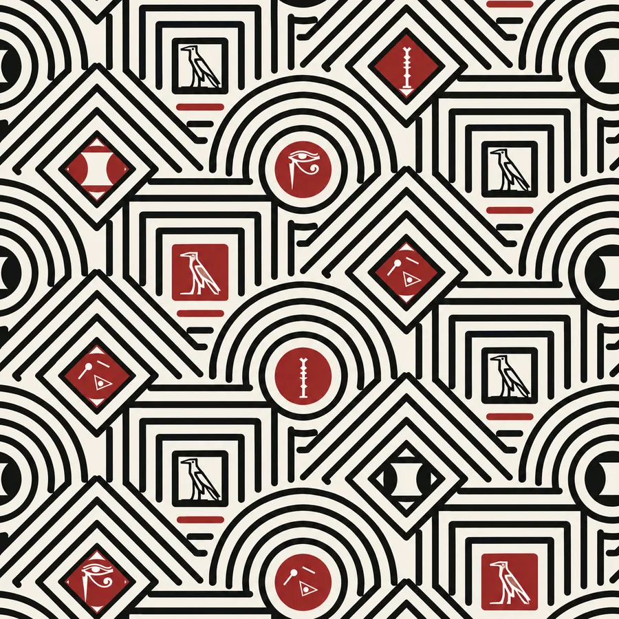
Le travail contemporain garde la logique des encadrements et la présence des cinq bassagrammes. Il remplace la dominante violette du document publié par une organisation blanc cassé, charbon et rouge profond, où la distinction entre fond, trame et accent renforce la lecture des figures. Le développement porte sur la mise en relation visuelle des signes — jamais sur leur sens. Les simulations pouvant présenter des écarts de tracé, les fichiers de production repartiront des originaux détenus par le porteur.
Préserver le sens dans chaque application
CE QUI NE CHANGE PAS
- Le dessin de référence des bassagrammes
- Leurs proportions, orientations et marques intérieures
- Les noms et sens repris du corpus
- Le système de couleurs de référence
CE QUI S’ADAPTE AU SUPPORT
- L’échelle du motif et la surface couverte
- Le choix d’un fond clair ou sombre
- La présence d’une bordure
- Le format : panneau, champ répété ou simple bande
Une déformation du signe, une coupe qui en supprime les marques essentielles ou une réduction excessive peuvent en altérer la reconnaissance. Les usages portant sur des objets, des zones du vêtement ou des situations sensibles devront être discutés avec les personnes compétentes, sans inventer d’interdits culturels. Les textes en langue bassa exigeront une police couvrant les diacritiques nécessaires et une relecture linguistique ; le mot BASSA employé dans les simulations n’est pas un logotype adopté.
Applications
Les planches qui suivent explorent la continuité du langage visuel à plusieurs échelles. Ce sont des simulations générées avec l’assistance de l’intelligence artificielle à partir du motif du projet : personnes, produits et espaces sont illustratifs et n’attestent ni fabrication, ni partenariat, ni adoption commerciale ou institutionnelle. [P3]
Mode et accessoires
| Support | Intention d’application |
|---|---|
| Costume masculin | Charbon dominant et panneau de motif sur le revers |
| Pagne et robe | Champ textile visible, composition adaptée aux coutures |
| T-shirt et tailleur | Insertion du motif dans une silhouette contemporaine |
| Sacs et foulard | Continuité de la collection à travers les accessoires |
Ces propositions ne sont pas des tenues historiques reconstituées. Le développement du vêtement demandera patronage, choix de matière, contrôle du placement des signes et prototypes portés.
Habiter avec le motif
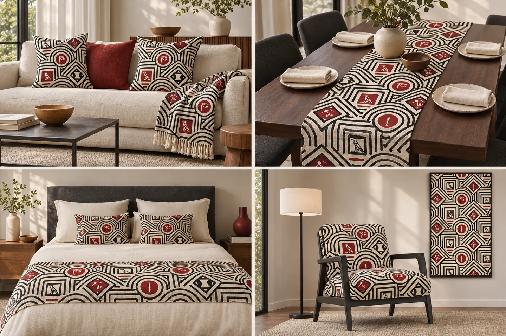
Coussins, plaid, chemin de table et linge de lit installent une continuité entre l’usage quotidien et la représentation culturelle ; le fauteuil et le panneau mural donnent au motif une présence plus structurante. Les surfaces unies blanc cassé et charbon maintiennent l’équilibre de la pièce. Pour une réalisation, les tissus seront choisis selon l’usage réel, leur résistance, leur entretien et leur exposition.
Édition, identité et imprimés
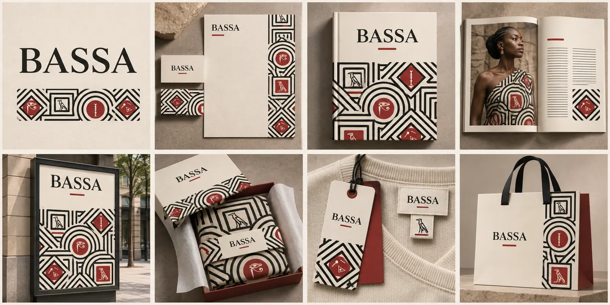
L’édition est le support central de la médiation : elle associe le signe à son nom, à son sens et à sa référence. Le packaging et les étiquettes prolongent cette fonction au moment où l’objet circule.
Numérique, illustration et médiation
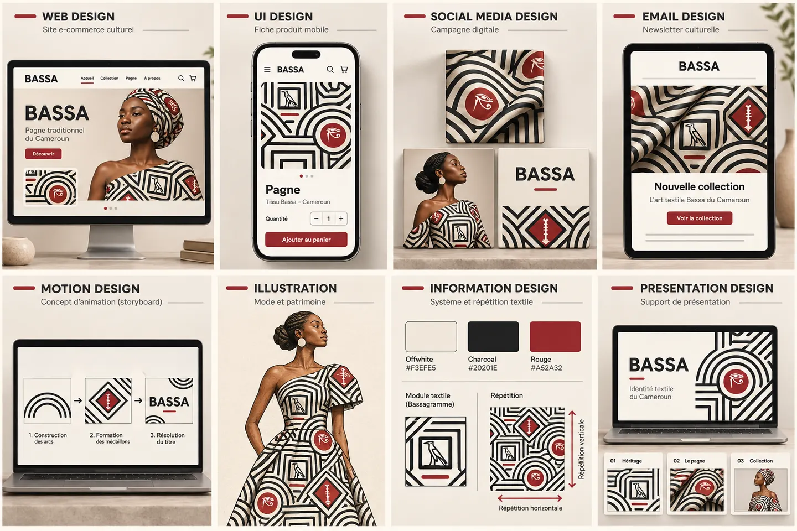
Un site et des interfaces pourraient accueillir le catalogue, les notices des bassagrammes et les récits du projet ; le storyboard esquisse une animation où les encadrements se composent progressivement. Ces interfaces sont des maquettes : elles ne prouvent pas l’existence d’un service, et leurs textes devront être recomposés à partir de contenus vérifiés.
Graphisme dans l’espace et sur les objets
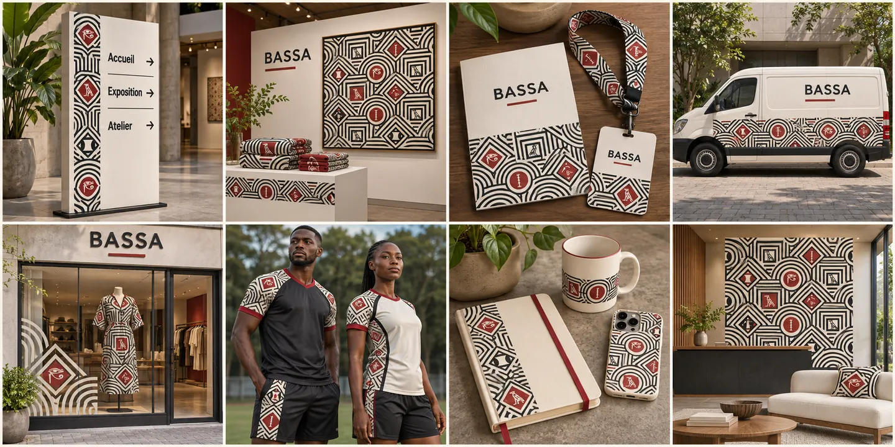
Les métiers de l’espace, du textile et de l’objet prolongent ici le design graphique. Les contraintes de lecture, de pose et de fabrication seront traitées dans le dossier technique de chaque support.
Mise en œuvre
Le projet propose aux institutions et aux partenaires une collaboration progressive, fondée sur des livrables vérifiables. Les étapes ci-dessous sont une proposition d’organisation : elles ne décrivent aucun accord déjà conclu.
| Phase | Travail à conduire | Livrable attendu |
|---|---|---|
| Documentation | Réunir les dossiers de l’auteur, approfondir les références, consigner les contributions | Répertoire sourcé et registre de provenance |
| Concertation | Organiser les échanges avec chercheurs, dépositaires de savoirs et représentants concernés | Comptes rendus et décisions d’usage |
| Finalisation | Reprendre les signes sources, dessiner le raccord, établir les variantes | Fichiers maîtres et charte de production |
| Prototypage | Tester tissu, vêtement, édition et signalétique sur supports réels | Échantillons et constats de qualité |
| Transmission | Préparer une exposition, des notices et des ateliers | Kit pédagogique et dossier de présentation publique |
Les apports recherchés
- Partenaires de recherche : contextualisation et relecture du corpus et des références.
- Acteurs culturels : accueil de la médiation, des expositions et des ateliers.
- Artisans et fabricants : évaluation des procédés — impression, tissage, broderie, découpe.
Le rôle de chacun sera défini avec son accord, de même que les modalités de crédit et les conditions d’utilisation des créations. L’évaluation portera sur la reconnaissance des signes, la compréhension de leurs notices, la qualité des reproductions et la cohérence des applications. Aucun résultat d’enquête ni budget n’est avancé sans données : le financement sera construit sur des devis correspondant aux supports retenus.
Conclusion — un tissu qui se lit
Le projet identitaire bassa ne propose pas d’inventer une tradition. Il propose de rendre un corpus existant visible, nommé et transmissible : cinq signes conservés tels que la recherche initiale les a fixés, une palette argumentée mais assumée comme choix de création, une grammaire géométrique capable de passer du pagne au livre, de l’écran à la signalétique. Sa valeur dépendra moins de la beauté des simulations que de la qualité de la concertation avec celles et ceux qui portent cette culture.
RÉFÉRENCES DOCUMENTAIRES
- [S1] Pouka Louis-Marie, 1950. « Les Bassa du Cameroun », Les Cahiers d’Outre-Mer, 3e année, n° 10, p. 153-166. PerséeArticle consulté par pages et extraits ; source historique à contextualiser.
- [S2] Champaud Jacques, 1973. Mom, terroir bassa, Cameroun. Atlas des structures agraires au sud du Sahara, Mouton et ORSTOM. IRD HorizonNotice et extraits indexés consultés.
- [S3] Ndebi Biya Robert, 1987. Être, pouvoir et génération. Le système mbok chez les Basa du Sud-Cameroun. Paris, L’Harmattan. AfricaBibNotice et résumé ; ouvrage non consulté intégralement.
- [S4] CUVIPREN, 2014. Proverbes bàsàa du Cameroun. Paris, L’Harmattan, 88 p. BnF Takam TikouPrésentation de la BnF du 10 février 2016 ; recueil non consulté intégralement.
- [S5] Mboui Joseph, 1967. Textes et documents Basa, Sud-Cameroun. Mbog Liaa, le pays de la grotte ou le savoir social du peuple Basa. Thèse de troisième cycle, Bordeaux. WorldCatRéférence de recherche complémentaire ; lecture intégrale à approfondir.
- [S6] Fotso Noumsi Ervais, 2022. « La traduction et le développement des langues nationales africaines, l’expérience de la CABTAL », Le Sycomore, vol. 16, n° 1, p. 16. PDF
- [S7] Lamko Koulsy, 2003. Émergence difficile d’un théâtre de la participation en Afrique Noire francophone. Thèse de doctorat, Université de Limoges, p. 109. theses.frCitation secondaire de M.-J. Hourantier, Du rituel au théâtre-rituel, L’Harmattan, 1984, p. 173 — source de 1984 à consulter directement.
- [S8] Hourantier Marie-José, Werewere Liking et Scherer Jacques, 1979. Du rituel à la scène chez les Bassa du Cameroun. Paris, A.-G. Nizet. BnF
- [S9] Titi-Nwel P., 1982. « Mbombok à la tête du lignage basaa », Travaux et Documents de l’ORSTOM, n° 142, p. 91-115. IRD
- [S10] Commission franco-camerounaise, 2025. Rapports des volets recherche et artistique consacrés à la période 1945-1971, remis le 28 janvier 2025. Vie publique
PIÈCES DU PROJET ET CRÉDITS
- [P1] BASSA IDENTITY FABRIC PROJECT, publication Behance du 29 août 2022, compte Olivier Manso. Projet conçu par Man Mbaï Likol, qui a personnellement supervisé la recherche initiale. La planche source crédite Adina-Bassa et Pierre Baya ; ces attributions sont conservées. Behance
- [P2] Palette graphique Bassa, version 1 du 10 novembre 2026, et étude chromatique du motif, réalisées sous la direction du porteur. Décisions de création, sans prétention de normalisation culturelle officielle.
- [P3] Planches d’application : simulations visuelles générées avec assistance d’intelligence artificielle à partir du motif du projet.